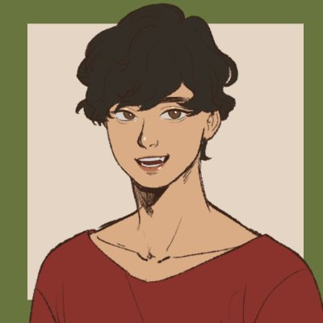

Sushruta Nandy
MSAI student at Plaksha University. Social scientist turned data analyst turned builder, working towards technical product management.
About
I started out in the social sciences, applying machine learning and statistics to questions in development economics — labour, micro-finance and family economics.
I then spent three years in data analytics. At Afrecon I built a Tableau scouting dashboard for football clubs and turned it into a subscription product. At Indus Insights I worked with a US credit card issuer and an Indian fintech, building risk dashboards, data marts and lending-funnel analyses, and later led a small team of analysts. Along the way I taught myself computer science fundamentals, which led me to the Master's in AI at Plaksha.
Today I'm most interested in the space between models and products: figuring out what's worth building, and making sure it actually works for the people using it.
Path so far
-
2019 — 2022Ashoka UniversityBSc Economics & Finance
-
2022 — 2023AfreconData Visualisation Consultant, football analytics & scouting
-
2023 — 2025Indus InsightsAssociate → Senior Associate, Cards Portfolio Analytics
-
2026 — 2027Plaksha UniversityMSAI (Master's in AI)
Contact
For my CV or anything else, drop me a line: